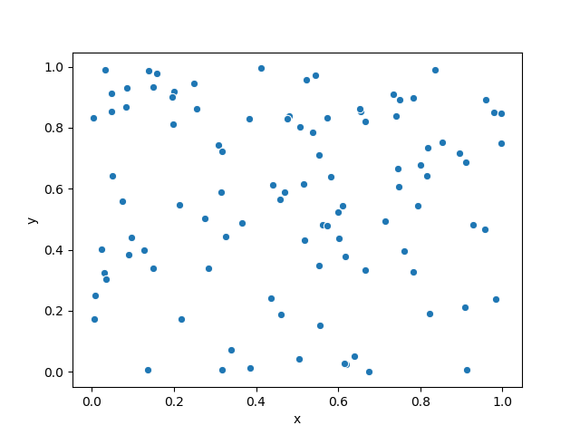

Note
Click here to download the full example code
Plotting some dots
This example plots some dots at random locations.
import numpy as np
import pandas as pd
import seaborn as sns
import matplotlib.pyplot as plt
x = np.random.rand(100)
y = np.random.rand(100)
data = pd.DataFrame({'x':x, 'y':y})
scatter = sns.scatterplot(x='x', y='y', data=data)
#scatter.set(xlabel='x', ylabel='y')
# avoid text output
plt.show()
Total running time of the script: ( 0 minutes 0.323 seconds)